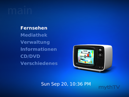
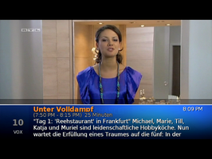
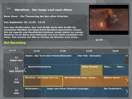
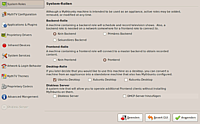
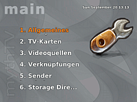
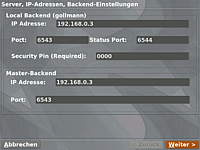
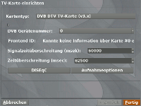
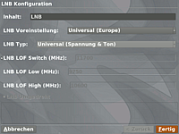
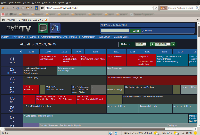
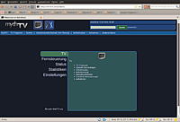

MythTV
Dieser Artikel wurde für die folgenden Ubuntu-Versionen getestet:
Ubuntu 16.04 Xenial Xerus
Ubuntu 14.04 Trusty Tahr
Zum Verständnis dieses Artikels sind folgende Seiten hilfreich:
MythTV verwandelt einen Rechner in einen Festplattenrekorder bzw. ein Medienzentrum ("media centre"). Neben der Möglichkeit, Fernsehsendungen aufzuzeichnen und abzuspielen, bietet MythTV unter anderem Folgendes:
Das Anhalten, Zurück- und wieder Vorspulen des Live-Programms
Verwendung von mehreren TV-Karten
Aufnahmen können über eine Weboberfläche programmiert, verwaltet oder heruntergeladen werden.
Automatische Erkennung von Werbeblöcken
Über Plugins können weitere Zusatzfunktionen wie DVD-Wiedergabe, Videoarchiv, Spiele, Wetterbericht und Browser installiert werden. Es ist auch möglich, den Aufnahme-Rechner so einzurichten, dass er sich zur vorgegebenen Zeit automatisch startet, aufnimmt und danach wieder herunterfährt. Trotz der niedrigen Versionsnummer gilt MythTV als ausgereift und stabil. Seine Oberfläche ist auf eine Steuerung per Fernbedienung am Fernseher ausgerichtet.
Ein Kernpunkt des Programms ist die Trennung zwischen Backend (interne Arbeitsabläufe) und Frontend (Interaktion mit dem Benutzer). So ist es möglich, im Haushalt einen zentralen Backend-Server neben dem Fernsehanschluss aufzustellen, der das Fernsehsignal verarbeitet, und Frontends in anderen Zimmern zu betreiben, die über das Heimnetzwerk gemeinsam auf das Live-Programm oder Aufzeichnungen zugreifen. Natürlich kann ein Computer auch als Backend und Frontend zugleich eingerichtet oder sogar mehrere Backends in einem Verbund gesteuert werden.
Im Folgenden wird die Installation und Konfiguration eines Rechners als Backend und Frontend gleichzeitig bzw. eines zusätzlichen Frontends beschrieben.
|  |
| Oberfläche |
|  |
| TV |
|  |
| EPG |
Installation¶
Hinweis:
Anfang November 2016 wurde bekannt gegeben, dass Mythbuntu eingestellt wird: So Long and Thanks for All the Fish  .
.
Die Installation verläuft wesentlich entspannter, wenn die TV-Karten schon vorher korrekt installiert wurden. In MythTV kann so ziemlich alles verwendet werden, was unter Linux erkannt wird: Digital-TV oder IPTV. Als Backend reicht unter Umständen ein älterer Rechner, wobei die konkreten Systemanforderungen von Fall zu Fall unterschiedlich sind (nähere Informationen ).
 Eine besonders komfortable Installation und Konfiguration ermöglicht das Kontrollzentrum der Mythbuntu-Distribution, mit dem viele Funktionen übersichtlich eingerichtet werden können. Besonders Einsteiger bekommen damit einen guten Überblick der Basis-Einstellungen und wichtigsten Optionen.
Eine besonders komfortable Installation und Konfiguration ermöglicht das Kontrollzentrum der Mythbuntu-Distribution, mit dem viele Funktionen übersichtlich eingerichtet werden können. Besonders Einsteiger bekommen damit einen guten Überblick der Basis-Einstellungen und wichtigsten Optionen.
mythbuntu-control-centre (universe)
 mit apturl
mit apturl
Paketliste zum Kopieren:
sudo apt-get install mythbuntu-control-centre
sudo aptitude install mythbuntu-control-centre
Dabei handelt es sich um ein Werkzeug, um Dinge einfacher zu gestalten und alles "unter einem Dach" zu vereinen.
Die MythTV-Pakete können alternativ direkt installiert werden, ohne den Umweg über das Kontrollzentrum. Das "Setup" ist dann auf gleiche Weise über Menüeinträge erreichbar.
mythtv-frontend (multiverse, nur das Frontend)
mythtv-backend (multiverse, nur das Backend)
mythtv (multiverse, Backend und Frontend gemeinsam)
mit apturl
Paketliste zum Kopieren:
sudo apt-get install mythtv-frontend mythtv-backend mythtv
sudo aptitude install mythtv-frontend mythtv-backend mythtv
Falls ein neues System aufgesetzt werden soll, kann man auch direkt die Mythbuntu-Distribution wählen, welche eine an Mythtv angepasste Ubuntu-Version (ebenfalls mit Kontrollzentrum) darstellt, oder ähnliche Projekte wie zum Beispiel Mythdora . Gerade zum Ausprobieren und Testen eignen sich die Live-Versionen. Diese Anleitung behandelt jedoch in erster Linie die Einrichtung mittels Mythbuntu-Kontrollzentrum.
Aktuelle Version¶
Im Mythbuntu-Kontrollzentrum unter "Repositories" besteht die Möglichkeit, die MythTV-Update-Repositories zu aktivieren. Es existiert dort ein Auswahldialog, bei dem man festlegt, auf welche Version aktualisiert werden soll. Anschließend lädt man die Paketquellen neu und kann die neuen Pakete installieren.
Backend¶
| Das Mythbuntu-Kontrollzentrum ist unter "System -> Administration" zu finden. Erster, und zugleich wichtigster, Menüpunkt sind die System-Rollen. Hier können die Funktionen eines Frontends, Backends oder beider installiert werden. Unter Backend wird dabei zwischen einem primären und sekundären Backend unterschieden. Ein sekundäres Backend wäre ein zusätzlicher Rekorder zu einem schon bestehenden Backend. Wenn nur ein Rechner als Backend fungiert, sollte demnach "primär" gewählt werden. Nach Auswahl und Bestätigung werden die entsprechenden Pakete installiert. |  |
| Während der Installation wird man über das MySQL-Passwort informiert, welches entweder gleich notiert oder auch nachträglich in den Backend-Einstellungen abgelesen werden kann (bzw. in /etc/mythtv/mysql.txt). Dieses Passwort wird benötigt, um die einzelnen Frontends mit einem Backend zu verbinden. Darüber hinaus wird man im Rahmen des Installationsprozesses aufgefordert, eine Fernbedienungen via Lirc zu installieren. Das kann jedoch an dieser Stelle ruhig übersprungen werden. Wenn später die ersten Testaufnahmen gelungen sind, kann die Lirc-Konfiguration über das Mythbuntu-Kontrollzentrum nachgeholt werden. | |
Anschließend kann das Backend über "System -> Administration -> Mythbackend Setup" konfiguriert werden. Man sollte sich dabei jedoch klar machen, dass, solange das Einrichtungsprogramm ("setup") läuft, der Mythbackend-Prozess im Hintergrund gestoppt bleibt und geplante Aufnahmen nicht starten. Diese Tatsache wird noch einmal ins Gedächtnis gerufen, sobald das Einrichtungsprogramm gestartet wird. Außerdem wird man beim ersten Start informiert, dass der eigene Benutzer zur mythtv-Gruppe hinzugefügt wird, was nach einem automatisch ausgeführten Ab- und und wieder Anmelden erledigt ist. Bei nochmaligem Aufruf des Einrichtungsprogramms kann man unter "Verschiedenes -> Konfiguration -> Grundeinstellungen" eben diese vornehmen: Soll der Backend-Server im Heimnetzwerk erreichbar sein, muss die interne IPv4-Adresse "127.0.0.1" in die tatsächliche IP-Adresse des LAN abgeändert werden, welche am besten statisch vergeben sein sollte. Danach sollte auf den folgenden Seiten "PAL" als "TV Format" ausgewählt werden und die "Kanalfrequenz" auf "Westeuropa" gestellt werden. |   |
TV-Karten¶
| Nächster Punkt ist die Auswahl der zu verwendenden TV-Karten im gleichnamigen Menüpunkt. Wenn eine DVB-Karte benutzt wird, den Kartentyp "Digital Video Broadcast Card (DVB)" auswählen. Diese sollte dann automatisch erkannt und Daten über die Karte angezeigt werden. Sollte das nicht der Fall sein, ist die Hardware wahrscheinlich noch nicht richtig konfiguriert (TV-Karte). Bei DVB-S Karten muss unter "DISEqC" der LNB eingerichtet werden. Bei IPTV-Verbindungen sollte "Network Recorder", bei analogen Karten die gleichnamige Option Analogue V4l Capture" ausgewählt werden, bei MPEG-Encodern wie der PVR-150 ist "IVTV MPEG-2" richtig. Bei den übrigen Standardeinstellungen ist im Normalfall nichts zu ändern. Wenn eine Twinkarte (z.B. Digital Device Cine S2-HDTV) verwendet werden soll, muss man darauf achten, auch beide Tuner einzurichten; dabei steht frontend0 für den ersten, frontend1 für den zweiten Tuner. Entsprechendes gilt für die Zuordnung .
|   |
Videoquellen¶
Danach muss mindestens eine Videoquelle angegeben werden. Videoquellen kommen besonders bei mehreren TV-Karten Bedeutung zu, denn diese regeln, welche Karte auf welche Gruppe von Sendern zugreift. So lassen sich zum Beispiel die Fernsehsender über eine DVB-T-Quelle und eine DVB-S-Quelle auf die unterschiedlichen Karten aufteilen. Am besten, man gibt eine Beschreibung der Sendergruppe als Namen an, z.B. DVB-S. Der Grabber sorgt dafür, dass diese Sender dann mit elektronischen Programminformationen gefüttert werden. Bei DVB-T, DVB-S und DVB-C kann gleich die Option "EIT" ausgewählt werden, um die meistens mitgelieferten EPG-Daten zu nutzen. Der Nachteil ist, dass die TV-Karte dann ständig von MythTV genutzt wird und kein anderes Programm darauf zugreifen kann (siehe Problemlösung). Zudem kann dadurch der Treiber für die TV-Karte vor einem Suspend oder Hybernate nicht entladen werden (Meldung "Unloading kernel module <modulname>...FATAL: Module <modulname> is in use" in /var/log/pm-suspend.log). Falls die Programmvorschau mittels "EIT" nicht funktioniert, kann alternativ ein XMLTV-Grabber genutzt werden, dessen Implementierung in MythTV unter Programmführer erläutert wird.
Verknüpfungen¶
Unter "Verknüpfungen" werden dann die definierten Videoquellen mit den angegebenen TV-Karten verbunden. Dabei ist zu beachten, dass zwei unterschiedliche Karten nicht auf dieselbe Videoquelle zugreifen sollten. Das bedeutet, dass zum Beispiel DVB-T Karten nicht auf DVB-S Sender zugreifen können, jedoch ähnliche Karten zu einer Videoquelle zusammengefasst werden sollten.
Je nach Art des TV-Signals unterscheidet sich auch die Sendersuche. Es wird empfohlen, die Sender mit Hilfe einer vorher angefertigten channels.conf-Datei einzuspielen, welche in allen Fällen funktionieren sollte. Hinweise für die Sendersuche bei DVB-T findet man im Artikel dvb-utils. Bei DVB-S und Analog-TV kann hingegen auch auf den eingebauten Suchlauf zurückgegriffen werden.
Frequenzwerte für den Suchlauf:
| DVB-S Werte : Deutschland | ||
| Satellit | KHZ | Symbolrate |
| Astra 19,2 Ost | 11837000 | 27500 |
Ordnerprofile¶
Schließlich kann man unter "Aufnahmeprofile" Ordnerpfade angeben, in denen die Aufnahmen angelegt werden. Da bei den Aufnahmen mitunter große Dateien entstehen, ist es ratsam, auch dementsprechend Platz zur Verfügung zu stellen. Außerdem muss der User mythtv für die angegebenen Ordner Lese- und Schreibrechte besitzen [5]. Die grundlegendsten Einstellungen sind gemacht, und das "Setup" kann mit
Esc verlassen werden. Nach dem Ausstieg erscheint die Frage, ob man neue Programminformationen in die Datenbank schreiben will bzw. mythfilldatabase ausgeführt werden soll. Die Bestätigung kann in jedem Fall "gefahrlos" gegeben werden. Falls der Bezug von Programminformationen schon definiert ist (besprochenes EIT), werden diese verarbeitet, falls nicht, kann darauf verzichtet werden.
Frontend¶
Für die Installation des Frontends ist analog zum Backend im Mythbuntu-Kontrollzentrum unter "System-Rollen -> Frontend" auszuwählen und zu bestätigen. An erster Stelle sollte die Überprüfung der Grundfunktionen des Backends stehen. Erforderlich für alle Funktionen des Frontends ist eine Verbindung zum Backend, wofür eine Netzwerkverbindung, das MySQL-Passwort und die IP-Adresse des Backends benötigt wird. Am einfachsten lassen sich diese Eingaben wiederum im Mythbuntu-Kontrollzentrum unter "MythTV Konfiguration" machen, wo sie auch gleich mittels "MySQL Verbindung testen" überprüft werden können. Die Standardeinstellungen, "Benutzer = mythtv" und "MythTV Database = mythconverg", sollten beibehalten werden. Wenn Backend und Frontend zusammenfallen, müsste die Konfiguration bereits übereinstimmen. Lässt sich keine Verbindung aufbauen, sollte zuerst die Konfiguration des MySQL-Servers überprüft werden (siehe Problemlösung). Alternativ dazu können Backend-IP und MySQL-Passwort auch direkt im Frontend unter den Grundeinstellungen eingetragen werden.
Starten lässt sich das Frontend selbst unter "Anwendungen -> Sound & Video -> Mythtv Frontend", das unter dem Benutzer mythtv läuft. Im Menüpunkt "Fernsehen" kann überprüft werden, ob alles "richtig" gemacht wurde. Dann können weitere Funktionen und Einstellungen gemacht werden, um das volle Potenzial von Mythtv auszuschöpfen.
Weitere Konfiguration¶
Programmführer¶
Ist das Fernsehen über das Backend gelungen, kann man sich nun dem elektronischen Programmführer widmen, falls dieser noch nicht eingerichtet worden ist. Dieser versorgt den Benutzer mit Informationen zu aktuellen und zukünftigen Programmen und erleichtert das Programmieren von Aufnahmen. Wer unter "Videoquellen" "EIT" ausgewählt hat und so schon über einen Programmführer verfügt, kann diesen Schritt überspringen. Hat man keine DVB-Karte oder funktioniert die Programminformationen per EIT nicht, so führt ein XMLTV-Grabber unter Umständen zu einer ähnlich guten Lösung. Das XMLTV-Dateiformat ist nach Installation des Pakets
xmltv (universe )
mit apturl
Paketliste zum Kopieren:
sudo apt-get install xmltv
sudo aptitude install xmltv
in MythTV unterstützt. Die Einbindung in Mythtv selbst passiert unter "Videoquellen" im Backend-Setup. Dort muss der richtige Grabber nach eventueller Kompilierung ausgewählt werden (falls nichts zur Auswahl steht, kann man alle nicht gebrauchten "tv_grab*" löschen und nochmals suchen lassen). Um den Grabber mit den einzelnen Sendern abzugleichen, muss dann die "xmltvid" in der MythTV-Senderliste mit der Liste des Grabbers übereinstimmen. Diese "xmltvid" läßt sich für MythTV im Kanalkonfigurator, mit einem Eintrag in der channels.conf oder in Mythweb unter "Einstellungen/Kanalinformation" eintragen. Die Dokumentation des XMLTV-Grabbers sollte klären, wo die benötigten "xmltvids" der Sender zu finden sind. Der Informationsabgleich mit der MythTV-Datenbank erfolgt durch den Befehl "mythfilldatabase". Dieser kann zum ersten Test händisch eingegeben werden. Im Normalbetrieb kann man es MythTV unter "Grundeinstellungen" überlassen, sich automatisch darum zu kümmern. Etwaige Zeitunterschiede lassen sich dort ebenfalls korrigieren, "automatisch" oder stundenweise.
Plugins¶
Wie in der Einleitung schon genannt, erweitern Plugins die Funktionen von MythTV. Im Mythbuntu-Kontrollzentrum lassen sich gewünschte Plugins auswählen und installieren. Alternativ können auch die entsprechenden Plugins als Pakete (multiverse) installiert [1] werden.
| Plugins | ||
| Plugin-Name | Paketname | Funktion |
| MythPlugins | mythplugins | Installiert alle Plugins, die in dieser Tabelle genannt sind |
| MythArchive | mytharchive | DVDs von Aufnahmen oder Mythvideo Dateien erstellen |
| MythMusic | mythmusic | Musikwiedergabe |
| MythBrowser | mythbrowser | Spartanischer Browser für kurze Surfabenteuer |
| MythGallery | mythgallery | Bildgalerie und Slideshow |
| MythGame | mythgame | Ermöglicht die Integration von Emulatoren für Videospiele |
| MythMovies | mythmovies | Kinoprogramm |
| MythWeb | mythweb | Eine Weboberfläche für Mythtv Backends; Aufnahmeverwaltung, Konfiguration; siehe unten |
| MythWeather | mythweather | Aktuelle Wetterdaten und Wettervorhersage anzeigen |
| MythVideo | mythvideo | Integriert Videodateien, DVD Wiedergabe, Rippen von DVDs |
| MythNews | mythnews | RSS-Newsfeed-Reader |
| MythNetvision | mythnetvision | Ein Internet Video Player; ab lucid in einer Beta-Version |
Für Mutige gibt es noch eine Reihe inoffizieller Plugins .
Plugin Mythweb¶
Eine der wichtigsten Erweiterungen für das Backend ist sicherlich "Mythweb". Das Plugin ermöglicht die Verwaltung des Backends über eine Weboberfläche, die unter "http://<IP-des-Backend>/mythweb" im Browser erreichbar ist. Der Umgang mit Mythweb ist intuitiv und leicht verständlich. Unter anderem kann damit das Fernsehprogramm aufgerufen und nach Sendungen gesucht werden. Des Weiteren können Aufnahmen programmiert, gelöscht und heruntergeladen werden. Bei der Programmierung einer Aufnahme stehen mehrere Modi zur Verfügung. Zum Beispiel kann eine Sendung wöchentlich auf einem bestimmten Sender aufgezeichnet werden. Besonders ideal ist dieses Interface auch, um die Senderliste nach eigenem Belieben zu bearbeiten, was im Backend vergleichsweise mühsam ist. Für eine spezifische Konfiguration des Backend-Systems ist es jedoch eher nicht geeignet. |  |
| Möchte man das Backend im LAN nicht so ohne weiteres freigeben, so kann ein Passwort eingerichtet werden, ebenfalls im Mythbuntu-Kontrollzentrum. (Wer das Backend nicht starten möchte, um nur das Fernsehprogramm am Computer zu lesen, dem sei TV-Browser empfohlen.) |  |
Verschiedene Optimierungen¶
Das Mythbuntu-Kontrollzentrum bietet des Weiteren die Möglichkeit, Libdvdcss2 (zur DVD-Wiedergabe) und ffmpeg zu installieren.
Da das Auge ja bekanntlich mitisst, gehören auch visuelle Verbesserungen dazu. Durch zahlreiche Themen kann der schlicht gehaltenen Standard-Look ersetzt werden. Am besten man macht sich erstmal ein Bild der offiziellen Themes , bevor man die eigenen Favoriten im MythTV-Kontrollzentrum oder als Paket installiert (multiverse). Die Auswahl selbst geschieht dann im Frontend, unter "Erscheinungsbild".
Da die angegebenen Sendezeiten nicht immer mit den tatsächlichen Sendezeiten übereinstimmen, empfiehlt es sich, ein paar Minuten früher und ein paar Minuten später aufzunehmen. Unter "TV -> Allgemeines" kann die Vorlauf- und Nachlaufzeit für eine Aufnahme erhöht werden. Für die Einrichtung der Fernbedienung sollte man sich am besten an den Lirc-Artikel halten. Wichtig ist dabei zu wissen, dass für MythTV eine vorgefertigte ~/.lirc/mythtv erstellt wird. Darüber hinaus ist es nützlich, die vielen Tastenkombinationen für das Programm zu kennen: Keyboard Commands .
Problembehebung¶
Keine Verbindung zum Backend¶
Bei einer Neuinstallation kann es vorkommen, dass der MySQL-Server nicht auf Anfragen aus dem LAN erreichbar ist. Um dies zu beheben, ist in der Datei /etc/mysql/my.cnf die Zeile "bind-address" so auszukommentieren:
# Instead of skip-networking the default is now to listen only on # localhost which is more compatible and is not less secure. #bind-address = 127.0.0.1
Nach einem Neustart sollte die Verbindung dann klappen.
Ordnerprofile nicht verwendbar¶
Wenn bestimmte Verzeichnisse für die Speicherung von MythTV-Material nicht zugänglich sind, sollten die Lese- und Schreibrechte überprüft werden [5]. Der Benutzer mythtv bzw. die Gruppe mythtv sollte Schreibrechte besitzen.
Kein Vollbildmodus¶
Die Verwendung von Compiz führt dazu, dass im Vollbildmodus von MythTV die Panels sichtbar bleiben. Zur Lösung kann man entweder Compiz deaktivieren (348934 für weitere Informationen ) oder im CompizConfig Einstellungs-Manager unter der Kategorie "Werkzeuge" und dem Menüpunkt "Workarounds" die Option "Legacy-Fullscreen-Support" aktivieren (ältere Ubuntu-Versionen: unter "Abhilfen" die Option "Legacy-Fullscreen-Support" aktivieren).
DVB-Karte freigeben¶
Damit man auch mit anderen Programmen auf eine DVB-Karte zugreifen kann, muss die Karte in MythTV erst freigegeben werden. Das geschieht, indem im "Backend Setup -> TV-Karten" die gewünschte Karte ausgewählt wird und unter "Aufnahmeeinstellungen" die Option "DVB-Karte bei Bedarf ansprechen" aktiviert und die "DVB-Karte für EIT-Scan verwenden" deaktiviert wird.
Mythbuntu-Aussehen verändern¶
Ein Nachteil des Mythbuntu-Kontrollzentrums ist, dass man automatisch in den Genuss des Mythbuntu-Artworks kommt. Allerdings lässt sich dieses auch wieder deinstallieren, indem man unter "Aussehen" die Option "Starte automatisch eine dezidierte MythTV-Sitzung..." aktiviert und anschließend wieder deaktiviert. Erst dann wird die Option "Mythbuntu: Aussehen & Einstellungen" darunter verfügbar und kann abgewählt werden. Warum das so ist, kann an dieser Stelle leider nicht beantwortet werden.
Links¶
MythTV in der Ubuntu.com Wiki-Dokumentation
- sehr ausführliche bebilderte Anleitungen

- Erstellt mit Inyoka
-
 2004 – 2017 ubuntuusers.de • Einige Rechte vorbehalten
2004 – 2017 ubuntuusers.de • Einige Rechte vorbehalten
Lizenz • Kontakt • Datenschutz • Impressum • Serverstatus -
Serverhousing gespendet von